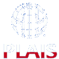

PLAIS Bulletin 36
Drodzy cz³onkowie PLAIS,
W za³aczeniu aktualna informacja o 24th International Conference on Advanced Information Systems Engineering CAiSE'2012, której PLAIS jest wspó³organizatorem:
http://caise2012.univ.gda.pl/index.php
Dostêpny jest ju¿ aktualny program CAiSE'12:
http://caise2012.univ.gda.pl/index.php?page=program01
Z ca³± pewno¶ci± jeste¶cie Pañstwo zainteresowani udzia³em w tej presti¿owej konferencji, do czego serdecznie zachêcam. Maj±c to na wzglêdzie, zaproponowa³em Komitetowi Programowemu przed³u¿enie terminu zg³aszania referatów na FORUM CAiSE 2012 do 19 kwietnia:
http://caise2012.univ.gda.pl/index.php?page=forum
Materia³y z CAiSE 2012 FORUM zostan± opublikowane przez CEUR. Tak wiêc, zaakceptowany na FORUM referat bêdzie znacz±co liczy³ siê w dorobku Autora, tak samo jak udzia³ w cenionej w ¶rodowisku informatyki, informatyki ekonomicznej i in¿ynierii oprogramowania - konferencji CAiSE 2012.
Serdecznie zapraszam do skorzystania z tej szansy.
Z wyrazami szacunku,
Stanis³aw Wrycza
---
Za³±cznik: CAiSE_2012-opis.docx